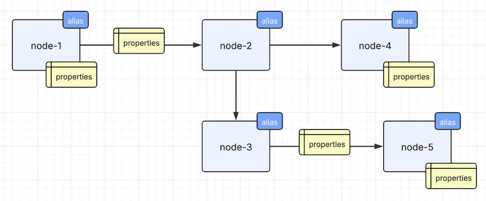

Minimalist Property Graph
An in-memory Property Graph system is available as a built-in feature in the platform-core.
Purpose
Property graph is a powerful way to represent entities and relationships. The rationale for a minimalist in-memory property graph system is to address business use case that involves only a few hundred nodes. Interestingly, a few hundred nodes and relationships can indeed represent a reasonably complex knowledge base for computation and decision making.
By limiting the feature set and reducing the number of nodes, we can fit everything into memory for high speed graph tranversal, comparision, computation and decision making. This eliminates network latency typically associated with a full feature network based graph database.
From a usability perspective, it is viable to display the whole knowledge base in a graphical user interface (not included in this project). A smaller graph not only increases computational efficiency but also reduces the cognitive complexity for the reader.
We call this in-memory property graph as a "mini-graph".
Concepts
A property graph is a set of nodes interconnected. Each connection is unidirectional.
An example of a mini-graph is shown in Figure 1. It describes a graph with 5 nodes connected in a particular fashion.
Each node is addressable by a unique "alias" name. Each node or edge can contain a set of key-values (aka 'properties'). Values are untyped so that you can store any primitive values or objects as you like.
Figure 1 - Mini-Graph example

Terminology
- Alias - unique node name
- Node - a data entity
- Connection - a logical unidirectional link between two nodes. Bi-directional link is represented by two unidirectional connections.
- Relation - a connection may have zero or more relations
- Node Type - a node must have at least one type indicating the purpose of the entity
- Relationship Type - a relation must have one and only one type
- Properties - a set of optional key-values in a node or a relation
Unlike traditional property graph, we have the concept of a connection which may or may not contain relations. When you remove a connection, its associated relations, if any, will be cleared.
Underlying technology
The system extends the Google Guava's MutableGraph module with alias for nodes, types and properties for nodes and edges.
API summary
Create a mini-graph instance
var graph = new MiniGraph();
Create a node in a graph
In the following example, a node with alias "A" and type "transaction" is created.
var nodeA = graph.createNode("A", "transaction");
Connect two nodes in a graph
var nodeA = graph.createNode("A", "transaction");
var nodeB = graph.createNode("B", "data");
var r1 = graph.connect("A", "B");
Add a type to a node
nodeA.addType("service");
Add a key-value to a node
nodeA.addProperty("hello", "world");
Find a node by alias
var node = graph.findNodeByAlias("B");
Find a node by ID
Each node is created with a UUID. You may retrieve a node using it.
var node = graph.findNodeById("ea75d293fd40419b9c24d41376416da7");
Find a list of nodes by type
You may retrieve all the nodes that has a certain type
var dataNodes = graph.findNodesByType("data");
Add a relation to a connection
var nodeA = graph.createNode("A", "transaction");
var nodeB = graph.createNode("B", "data");
var c1 = graph.connect("A", "B");
var r1 = c1.addRelation("demo1");
Add a key-value to a relation
var nodeA = graph.createNode("A", "transaction");
var nodeB = graph.createNode("B", "data");
var c1 = graph.connect("A", "B");
var r1 = c1.addRelation("demo1");
r1.addProperty("hello", "world");
Find a connection by source and target aliases
var r1 = graph.findConnection("A", "B");
Find bi-directional connections by source and target aliases
The following will return 0 to 2 connections (no relation, one forward relation and one backward relation)
var connections = graph.findBiDirectionalConnection("A", "B");
Discover forward links by alias of a node
The following will return a list of forward connections in the first degree.
var connections = graph.getForwardLinks("A")
Discover backward links by alias of a node
The following will return a list of backward connections in the first degree.
var connections = graph.getBackwardLinks("A")
Discover neigbors by alias of a node
The following will return a list of connections in the first degree regardless of direction.
var connections = graph.getNeighbors("A")
Discover complete path
The following will return an array of node paths.
var graph = new MiniGraph();
var nodeA = graph.createNode("A", "transaction");
var nodeB = graph.createNode("B", "data");
var nodeC = graph.createNode("C", "data");
var nodeD = graph.createNode("D", "data");
var nodeE = graph.createNode("E", "data");
graph.connect("A", "B");
graph.connect("A", "C");
graph.connect("C", "D");
graph.connect("D", "E");
var pathsFromA = graph.findPaths("A");
System.out.println(pathsFromA);
"[[A], [B, C], [D], [E]]"
Clear a graph
graph.reset();
Export a graph
The exported graph is a map of key-values that you can persist it into an external store. If you persist the map as a text file, we recommend using either JSON or YAML format.
var map = graph.exportGraph();
Import a graph
Once you exported a graph into an external store, you can restore it as a map and import it into a new mini-graph.
var graph = new MiniGraph();
graph.importGraph(map);
Best practiced to release graph memory after use
Mini-graph is memory efficient with its minimalist design.
However, please limit the number of nodes to 500 or less. The default value is 500.
Its typical use case is real-time computation of policies for decision making.
It is important that your application must unload graph memory after use. There are multiple ways to unload graph instance memory.
Functional scope
You can keep the mini-graph instance inside the scope of a function. When your function exits, memory of the mini-graph instance will be released by the Java's garbage collector.
Event flow instance
In Chapter 4, we have discussed the use of Event Flow. In the beginning of a flow, you can add a new instance of a mini-graph to a shared concurrent map. At the end of the flow, you should add a task or exception handler to remove the mini-graph instance from the shared concurrent map.
Managed cache
The platform-core includes a built-in memory cache module. You can put a mini-graph instance in the memory cache that has a configured expiry time. e.g. 10 seconds.
A stronger safeguard is to combine the use of event flow instance and managed cache. Therefore, if normal clean up is not done at the end of a flow, the memory of a mini-graph instance will be released by the cache system automatically.
| Chapter-9 | Home |
|---|---|
| API Overview | Table of Contents |